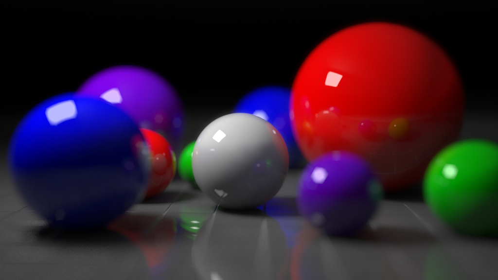
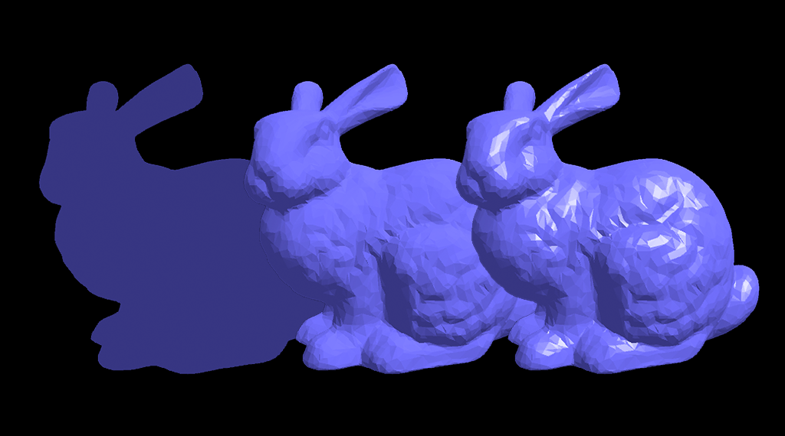
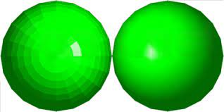

class: center, middle # Ray Casting and Lighting ### Instructed by: Eslam Adel #### eslam.a.mahmoud@eng1.cu.edu.eg --- ## Ray Casting -- ### Vision Process Vision process is as follow --  --- ## Ray Casting Cont, -- **Ideally** * There is an infinite number of rays * Multiple reflections happen for the same ray on different objects -- * So how we simulate this in computer graphics ? Keep in mind that the objective is to get a 2D image of the scene. --- ## Ray Casting Cont, -- **Basic Idea** The process is reversed where rays are sent from the camera position instead of receive it at the camera position. -- Pseudo code for ray casting ```python for each pixel: Send a ray through the scene Find the interection with objects Calculate the color at this intersection Assign this color to that pixel where ray was sent from ``` -- <center> <img src="../../images/300px-Ray_trace_diagram.svg.png" width="50%"> </center> --- ## Ray Tracing --  -- * It is the same idea with more complex calculations -- * Rays must be checked with all objects in the scene by tracking its reflections recursively. -- * It is computationally extensive and time-consuming process but has realistic results. --- ## Ray Tracing Cont, -- * Sample of generated images with ray tracing [(source)](https://en.wikipedia.org/wiki/Ray_tracing_(graphics)) -- <center> <img src="../../images/800px-Glasses_800_edit.png" width="90%"> </center> --- ### Ray Tracing Cont, -- Another sample. Look how realistic it is.  --- ## Lighting and materials ### Classical lighting model -- * Ambient lighting : It is an approximation of environmental light that comes from all direction and there is no direct light source. This light bounces through the scene equally. As a result, it illuminate all objects equally. It's like a fading light. -- * Diffuse lighting The light that comes from a specific light source and reflected in all direction due to the roughness of the surface. -- --- ## Lighting Cont, --  Reflection is in all direction. --- ## Lighting Cont, -- * Specular lighting: This light comes from a particular direction and perfectly reflect on the surface. Such effect is clear for the smooth surfaces. --  --- ## Lighting Cont, -- * This is the effect of each component --  --- ## Lighting in OpenGL -- * First, we need to define the light properties by defining RGB color for the ambient, diffuse, and specular components. ```c // Here we have a white light source float light_ambient[] = {1.0, 1.0, 1.0, 1.0}; float light_diffuse[] = {1.0, 1.0, 1.0, 1.0}; float light_specular[] = {1.0, 1.0, 1.0, 1.0}; ``` -- We need also to define the position of thr light source in our scene. ```c // This is the light position float light_position[] = {0.0, 0.0, 4.0, 1.0}; ``` --- ## Lighting in OpenGL Cont, -- * Second, Specify and assign the light properties including the position to a specific light source. ```c // Setting light source properties and enabling it glLightfv(GL_LIGHT1, GL_POSITION, light_position); glLightfv(GL_LIGHT1, GL_AMBIENT, light_ambient); glLightfv(GL_LIGHT1, GL_DIFFUSE, light_diffuse); glLightfv(GL_LIGHT1, GL_SPECULAR, light_specular); ``` -- * Finally, We need to enable that light source and enable lighting in general. ```c glEnable(GL_LIGHT1); glEnable(GL_LIGHTING); ``` --- ## Defining material properties -- * We've seen how to create light sources and assign specific ambient, diffuse, and specular properties. -- * We also need to define the properties of the objects in the scene in terms of ambient, diffuse, specular, emission, and shines. -- * First define the object properties. ```c GLfloat material_ambient[] = {0.1, 0.01, 0.01, 1.0}, material_diffuse[] = {0.3, 0.01, 0.01, 1.0}, material_specular[] = {1, 0.01, 0.01, 1.0}, material_shininess = 30; ``` -- * Second, assign it to the object material ```c glMaterialfv(GL_FRONT, GL_AMBIENT, material_ambient); glMaterialfv(GL_FRONT, GL_DIFFUSE, material_diffuse); glMaterialfv(GL_FRONT, GL_SPECULAR, material_specular); glMaterialf(GL_FRONT, GL_SHININESS, material_shininess); ``` --- ## Red light sphere Demo This is an example of a solid sphere -- **No light sources**  --- ## Red light sphere Demo Cont, -- **Only ambient is set**  --- ## Red light sphere Demo Cont, -- **Ambient and diffuse**  --- ## Red light sphere Demo Cont, -- **Ambient, diffuse, and specular**  -- **Note** The overall appearance of the object is determined by both material and light properties (**lightlab Demo**) --- ### Shading models -- <center>  </center> -- There are two types of shading: -- * Flat shading where each facet is shaded with its color and in between edges will appear. This is due to the color differences between facets. ```c glShadeModel(GL_FLAT); ``` -- * Gouraud shading (Smooth) where the color of the in between edges is an interpolation of the color of the surrounding facets. As a result, no clear edges are seen. It looks smooth. ```c glShadeModel(GL_SMOOTH); ``` -- By default it's shading is smooth. --- class: center, middle # Thanks